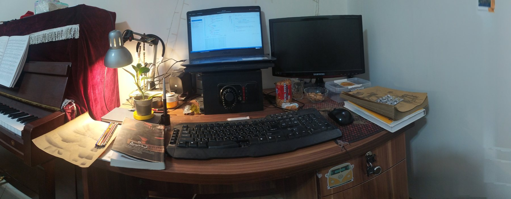

I build systems that can retrieve, reason, and run.
AI Engineer & Backend/Data Developer with 6+ years of experience designing scalable APIs, intelligent data workflows, RAG pipelines, LLM integrations, and high-performance financial systems.
About the engineer
A resume, but with the architecture left visible.
My center of gravity is the boundary between AI behavior and production software. I like the parts where data quality, system design, retrieval, latency, and developer tooling all meet.
I work across RAG pipelines, LLM integration, semantic search, agentic workflows, backend architecture, distributed systems, databases, and algorithmic trading tooling — with a strong preference for systems that are observable, testable, and explainable.
Where I have been building
Experience
Tools, patterns, instincts
Capabilities
Beyond the editor
The personal layer
Built outside the job description
Selected projects
The old project survives here
Notes / lab log
07 · contact
Have a hard system problem?
Send the context. I’m most interested in work where AI, backend architecture and data engineering are not separate lanes.